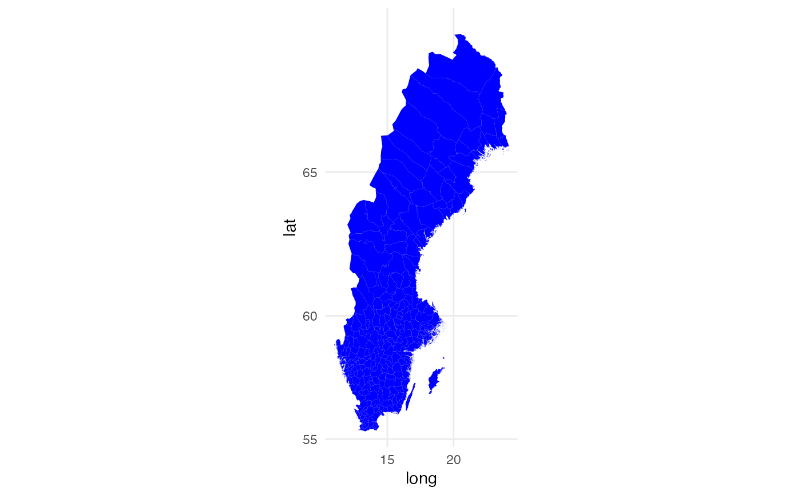

R/swe_kommuner_allpoints.R
swe_kommuner_allpoints.RdSweden map data set with township included
swe_kommuner_allpointsA data frame with 521384 rows and 9 variables. The negligible variables have been removed from the original data set:
longitude, numeric
latitude, numeric
specifies the order for each point, integer
"1" for the most essential, "2" and more for detailed points, factor
Each region or island in the map is a polygon where each level in this variable is a polygon, factor
id of county, integer
name of county, character
id of township, integer
name of township, character
# Example on how to make map of Sweden using ggplot2.
# Note that coord_map() is essential for the map to be in actual scale.
ggplot2::ggplot(data = swe_kommuner_allpoints, ggplot2::aes(x=long, y=lat, group = group)) +
ggplot2::geom_polygon(color = "white", size = 0, fill = "blue") +
ggplot2::coord_map() +
ggplot2::theme_minimal()
